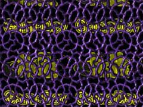
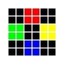
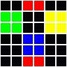

|
第20課 |
 |
|  |
蒙板:
到目前為止你已經學會如何使用alpha混合，把一個透明物體渲染到屏幕上了，但有的使用它看起來並不是那麼的復合你的心意。使用蒙板技術，將會按照你蒙板的位置精確的繪製。 |
|
 |
 |
歡迎來到第20課的教程，*.bmp圖像被給各種操作系統所支持，因為它簡單，所以可以很輕鬆的作為紋理圖片加載它。知道現在，我們在把圖像加載到屏幕上時沒有擦除背景色，因為這樣簡單高效。但是效果並不總是很好。
大部分情況下，把紋理混合到屏幕，紋理不是太少就是太多。當使用精靈時，我不希望背景從精靈的縫隙中透出光來；但在顯示文字時，你希望文字的間隙可以顯示背景色。
由於以上原因，我們需要使用「掩模」。使用「掩模」需要兩個步驟，首先我們在場景上放置黑白相間的紋理，白色代表透明部分，黑色代表不透明部分。接著我們使用一種特殊的混合方式，只有在黑色部分上的紋理才會顯示在場景中。
我只重寫那些改變的地方，如果你做好了學習的準備，我們就上路吧。 |  |
|
在這個程序裡，我們使用7個全局變量。變量masking為一個布爾值，標誌是否使用「掩模」。變量mp標誌鍵M是否按下，變量sp標誌空格是否按下。
接著我們創建保存5個紋理標誌的數組，loop為循環變量。變量roll使得紋理沿屏幕滾動。 | |
bool masking=TRUE; // 是否使用「掩模」
bool mp; // 鍵M是否按下
bool sp; // 空格是否按下
bool scene; // 繪製那一個場景
GLuint texture[5]; // 保存5個紋理標誌
GLuint loop; // 循環變量
GLfloat roll; // 滾動紋理
|
加載紋理代碼基本沒變，只是這裡我們需要加載5個紋理 |
|
int LoadGLTextures()
{
int Status=FALSE;
AUX_RGBImageRec *TextureImage[5]; // 創建保存5個紋理的數據結構
memset(TextureImage,0,sizeof(void *)*5); // 初始化
if ((TextureImage[0]=LoadBMP("Data/logo.bmp")) && // 加載紋理0
(TextureImage[1]=LoadBMP("Data/mask1.bmp")) && // 加載掩模紋理1，作為「掩模」使用
(TextureImage[2]=LoadBMP("Data/image1.bmp")) && // 加載紋理1
(TextureImage[3]=LoadBMP("Data/mask2.bmp")) && // 加載掩模紋理2，作為「掩模」使用
(TextureImage[4]=LoadBMP("Data/image2.bmp"))) // 加載紋理2
{
Status=TRUE;
glGenTextures(5, &texture[0]); // 創建5個紋理
for (loop=0; loop<5; loop++) // 循環加載5個紋理
{
glBindTexture(GL_TEXTURE_2D, texture[loop]);
glTexParameteri(GL_TEXTURE_2D,GL_TEXTURE_MAG_FILTER,GL_LINEAR);
glTexParameteri(GL_TEXTURE_2D,GL_TEXTURE_MIN_FILTER,GL_LINEAR);
glTexImage2D(GL_TEXTURE_2D, 0, 3, TextureImage[loop]->sizeX, TextureImage[loop]->sizeY,
0, GL_RGB, GL_UNSIGNED_BYTE, TextureImage[loop]->data);
}
}
for (loop=0; loop<5; loop++)
{
if (TextureImage[loop])
{
if (TextureImage[loop]->data)
{
free(TextureImage[loop]->data);
}
free(TextureImage[loop]);
}
}
return Status;
}
|
改變窗口大小和初始化OpenGL的函數沒有變化
| |
|
現在到了最有趣的繪製部分了，我們從清楚背景色開始，接著把物體移入屏幕2個單位。 |
|
int DrawGLScene(GLvoid)
{
glClear(GL_COLOR_BUFFER_BIT | GL_DEPTH_BUFFER_BIT);
glLoadIdentity();
glTranslatef(0.0f,0.0f,-2.0f); // 物體移入屏幕2個單位
|
下面一行，我們選擇'logo'紋理。我們將要通過四邊形把紋理映射到屏幕，並按照頂點的順序設置紋理坐標。
Jonathan Roy說OpenGL是一個基於頂點的圖形系統，大部分你設置的參數是作為頂點的屬性而記錄的，紋理坐標就是這樣一種屬性。你只要簡單的設置各個頂點的紋理坐標，OpenGL就自動幫你把多邊形內部填充紋理，通過一個插值的過程。
向前面幾課一樣，我們假定四邊形面對我們，並把紋理坐標(0,0)綁定到左下角，(1,0)綁定到右下角，(1,1)綁定到右上角。給定這些設置，你應該能猜到四邊形中間對應的紋理坐標為(0.5,0.5)，但你自己並沒有設置此處的紋理坐標！OpenGL為你做了計算。
在這一課裡，我們通過設置紋理坐標達到一種滾動紋理的目的。紋理坐標是被歸一化的，它的範圍從0.0-1.0，值0被映射到紋理的一邊，值1被映射到紋理的另一邊。超過1的值，紋理可以按照不同的方式被映射，這裡我們設置為它將迴繞道另一邊並重複紋理。例如如果使用這樣的映射方式，紋理坐標(0.3,0.5)和(1.3,0.5)被映射到同一個紋理坐標。在這一課裡，我們將嘗試一種無縫填充的效果。

我們使用roll變量去設置紋理坐標，當它為0時，它把紋理的左下角映射到四邊形的左下角。當它大於0時，把紋理的左上角映射到四邊形的左下角，看起來的效果就是紋理沿四邊形向上滾動。 |
|
glBindTexture(GL_TEXTURE_2D, texture[0]); // 選擇Logo紋理
glBegin(GL_QUADS); // 繪製紋理四邊形
glTexCoord2f(0.0f, -roll+0.0f); glVertex3f(-1.1f, -1.1f, 0.0f);
glTexCoord2f(3.0f, -roll+0.0f); glVertex3f( 1.1f, -1.1f, 0.0f);
glTexCoord2f(3.0f, -roll+3.0f); glVertex3f( 1.1f, 1.1f, 0.0f);
glTexCoord2f(0.0f, -roll+3.0f); glVertex3f(-1.1f, 1.1f, 0.0f);
glEnd();
|
啟用混合和禁用深度測試 |
|
glEnable(GL_BLEND); // 啟用混合
glDisable(GL_DEPTH_TEST); // 禁用深度測試
|
接下來我們需要根據masking的值設置是否使用「掩模」，如果是，則需要設置相應的混合係數。 |
|
if (masking) // 是否啟用「掩模」
{
|
如果啟用了「掩模」，我們將要設置「掩模」的混合係數。一個「掩模」只是一幅繪製到屏幕的紋理圖片，但只有黑色和白色。白色的部分代表透明，黑色的部分代表不透明。
下面這個混合係數使得，任何對應「掩模」黑色的部分會變為黑色，白色的部分會保持原來的顏色。 | |
glBlendFunc(GL_DST_COLOR,GL_ZERO); // 使用黑白「掩模」混合屏幕顏色
}
|
現在我們檢查繪製那一個層，如果為True繪製第二個層，否則繪製第一個層 |
|
if (scene)
{
|
為了不使它看起來顯得非常大，我們把它移入屏幕一個單位，並把它按roll變量的值進行旋轉（沿Z軸）。 |
|
glTranslatef(0.0f,0.0f,-1.0f); // 移入屏幕一個單位
glRotatef(roll*360,0.0f,0.0f,1.0f); // 沿Z軸旋轉
|
接下我們檢查masking的值來繪製我們的對象 |
|
if (masking) // 「掩模」是否打開
{
|
如果「掩模打開」，我們會把掩模繪製到屏幕。當我們完成這個操作時，將會看到一個鏤空的紋理出現在屏幕上。 |
|
glBindTexture(GL_TEXTURE_2D, texture[3]); // 選擇第二個「掩模」紋理
glBegin(GL_QUADS); // 開始繪製四邊形
glTexCoord2f(0.0f, 0.0f); glVertex3f(-1.1f, -1.1f, 0.0f);
glTexCoord2f(1.0f, 0.0f); glVertex3f( 1.1f, -1.1f, 0.0f);
glTexCoord2f(1.0f, 1.0f); glVertex3f( 1.1f, 1.1f, 0.0f);
glTexCoord2f(0.0f, 1.0f); glVertex3f(-1.1f, 1.1f, 0.0f);
glEnd();
}
|
當我們把「掩模」繪製到屏幕上後，接著我們變換混合係數。這次我們告訴OpenGL把任何黑色部分對應的像素複製到屏幕，這樣看起來紋理就像被鏤空一樣帖子屏幕上。
注意，我們在變換了混合模式後在選擇的紋理。
如果我們沒有使用「掩模」，我們的圖像將與屏幕顏色混合。 | |
glBlendFunc(GL_ONE, GL_ONE); // 把紋理2複製到屏幕
glBindTexture(GL_TEXTURE_2D, texture[4]); // 選擇第二個紋理
glBegin(GL_QUADS); // 繪製四邊形
glTexCoord2f(0.0f, 0.0f); glVertex3f(-1.1f, -1.1f, 0.0f);
glTexCoord2f(1.0f, 0.0f); glVertex3f( 1.1f, -1.1f, 0.0f);
glTexCoord2f(1.0f, 1.0f); glVertex3f( 1.1f, 1.1f, 0.0f);
glTexCoord2f(0.0f, 1.0f); glVertex3f(-1.1f, 1.1f, 0.0f);
glEnd();
}
|
繪製第一層圖像 |
|
else
{
|
如果「掩模打開」，我們會把掩模繪製到屏幕。當我們完成這個操作時，將會看到一個鏤空的紋理出現在屏幕上。 |
|
if (masking) // 「掩模」是否打開
{
|
如果「掩模打開」，我們會把掩模繪製到屏幕。當我們完成這個操作時，將會看到一個鏤空的紋理出現在屏幕上。 |
|
glBindTexture(GL_TEXTURE_2D, texture[1]); // 選擇第一個「掩模」紋理
glBegin(GL_QUADS); // 開始繪製四邊形
glTexCoord2f(roll+0.0f, 0.0f); glVertex3f(-1.1f, -1.1f, 0.0f);
glTexCoord2f(roll+4.0f, 0.0f); glVertex3f( 1.1f, -1.1f, 0.0f);
glTexCoord2f(roll+4.0f, 4.0f); glVertex3f( 1.1f, 1.1f, 0.0f);
glTexCoord2f(roll+0.0f, 4.0f); glVertex3f(-1.1f, 1.1f, 0.0f);
glEnd();
}
|
當我們把「掩模」繪製到屏幕上後，接著我們變換混合係數。這次我們告訴OpenGL把任何黑色部分對應的像素複製到屏幕，這樣看起來紋理就像被鏤空一樣帖子屏幕上。
注意，我們在變換了混合模式後在選擇的紋理。
如果我們沒有使用「掩模」，我們的圖像將與屏幕顏色混合。 | |
glBlendFunc(GL_ONE, GL_ONE); // 把紋理1複製到屏幕
glBindTexture(GL_TEXTURE_2D, texture[2]); // 選擇第一個紋理
glBegin(GL_QUADS); // 開始繪製四邊形
glTexCoord2f(roll+0.0f, 0.0f); glVertex3f(-1.1f, -1.1f, 0.0f);
glTexCoord2f(roll+4.0f, 0.0f); glVertex3f( 1.1f, -1.1f, 0.0f);
glTexCoord2f(roll+4.0f, 4.0f); glVertex3f( 1.1f, 1.1f, 0.0f);
glTexCoord2f(roll+0.0f, 4.0f); glVertex3f(-1.1f, 1.1f, 0.0f);
glEnd();
}
|
接下來啟用深度測試，禁用混合。 |
|
glEnable(GL_DEPTH_TEST); // 啟用深度測試
glDisable(GL_BLEND); // 禁用混合
|
最後增加roll變量，如果大於1，把它的值減1。 |
|
roll+=0.002f; // 增加紋理滾動變量
if (roll>1.0f) // 大於1則減1
{
roll-=1.0f;
}
return TRUE; // 成功返回
}
|
函數KillGLWindow(), CreateGLWindow() 和 WndProc() 沒有改變。
| |
|
接下來在wWinMain，我們添加鍵盤控制函數。我們檢查空格是否按下，如果是則設置sp變量為TRUE，sp變量用來切換場景。 |
|
if (keys[' '] && !sp) // 空格鍵是否被按下?
{
sp=TRUE;
scene=!scene; // 是則切換場景
}
|
如果空格鍵釋放，記錄下來 |
|
if (!keys[' ']) // 如果空格鍵釋放，記錄下來
{
sp=FALSE;
}
|
我們檢查M鍵是否按下，如果是則設置mp變量為TRUE，sp變量用來切換是否使用「掩模」 |
|
if (keys['M'] && !mp) // M鍵是否被按下
{
mp=TRUE;
masking=!masking; // 是則切換「掩模」
}
|
如果M鍵釋放，記錄下來 |
|
if (!keys['M']) // 如果M鍵釋放，記錄下來
{
mp=FALSE;
}
|
Eric Desrosiers指出，你也可以在載入的時候測試*.bmp圖像中的每一個像素，如果你你想要透明的結果，你可以把顏色的alpha設置為0。對於其他的顏色，你可以把alpha設置為1。這個方法也能達到同樣的效果，但需要一些額外的代碼。
在這課裡，我們給你演示了一個簡單的例子，它能高效的繪製一部分紋理而不使用alpha值。
謝謝Rob Santa的想法和例子程序，我從沒想到過這種方法。
我希望你喜歡這個教程，如果你在理解上有任何問題或找到了任何錯誤，請我知道，我想做最好的教程，你的反饋是非常重要的。
 |
版權與使用聲明:
我是個對學習和生活充滿激情的普通男孩,在網絡上我以DancingWind為暱稱，我的聯繫方式是zhouwei02@mails.tsinghua.edu.cn，如果你有任何問題，都可以聯繫我。
引子
網絡是一個共享的資源，但我在自己的學習生涯中浪費大量的時間去搜索可用的資料，在現實生活中花費了大量的金錢和時間在書店中尋找資料，於是我給自己起了個暱稱DancingWind，其意義是想風一樣從各個知識的站點中吸取成長的養料。在飄蕩了多年之後，我決定把自己收集的資料整理為一個統一的資源庫。
版權聲明
所有DancingWind發表的內容，大多都來自共享的資源，所以我沒有資格把它們據為己有，或聲稱自己為這些資源作出了一點貢獻。故任何人都可以複製，修改，重新發表，甚至以自己的名義發表，我都不會追究，但你在做以上事情的時候必須保證內容的完整性，給後來的人一個完整的教程。最後，任何人不能以這些資料的任何部分，謀取任何形式的報酬。
發展計劃
在國外，很多資料都是很多人花費幾年的時間慢慢積累起來的。如果任何人有興趣與別人共享你的知識，我很歡迎你與我聯繫，但你必須同意我上面的聲明。
感謝
感謝我的母親一直以來對我的支持和在生活上的照顧。
感謝我深愛的女友田芹，一直以來默默的在精神上和生活中對我的支持，她甚至把買衣服的錢都用來給我買書了，她真的是我見過的最好的女孩，希望我能帶給她幸福。
資源下載:
文檔 網頁格式
PDF格式
源碼 RAR格式 |
|
|